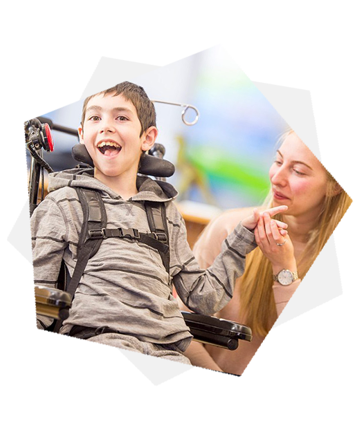

<!-- HERO -->
<section class="banner-area py-7">
  <!-- Content -->
  <div class="container">
    <div class="row align-items-center">
      <div class="col-md-12 col-lg-7 text-center text-lg-left">
        <div class="main-banner">
          <!-- Heading -->
          <h1 class="display-4 mb-4 font-weight-normal">
            Automating General Movements’ Assessment Solutions
          </h1>

          <!-- Subheading -->
          <p class="lead mb-4" style="text-align: justify; padding-right: 10px">
            Cerebral Palsy (CP) is a set of tenacious disorders that affects
            both the muscle coordination and body movement. It is caused by an
            abnormality of the brain mostly before birth and it is
            non-progressive. Cerebral refers to the brain and Palsy refers to
            weakness, together it means brain weakness. It is a group of
            neurological persistent disorders that appear in early childhood and
            affects both body movement and muscle coordination. There is no cure
            found yet for this disability.
          </p>

          <!-- Button -->
          <p class="mb-0">
            <a routerLink="/project" class="btn btn-primary btn-circled">
              Create Project
            </a>
          </p>
        </div>
      </div>

      <div class="col-lg-5 d-none d-lg-block">
        <div class="banner-img-block">
          
        </div>
      </div>
    </div>
    <!-- / .row -->
  </div>
  <!-- / .container -->
</section>
